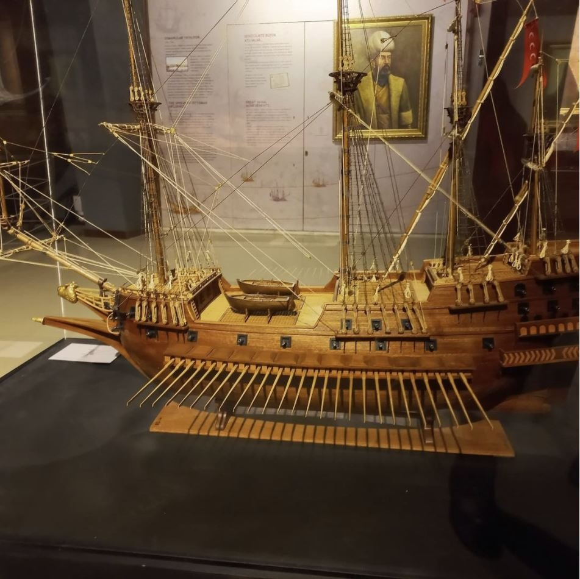

|  |
Ulu önder Atatürk’ün “Denizciliği Türk’ün büyük ülküsü yapmak” hedefinden hareketle Deniz Kuvvetleri Komutanlığının sosyal, tarihi ve teknik gelişimini yansıtmak, sivil toplumla, özellikle çocuklarla iletişim kurmak amacıyla kurulan Mersin Deniz Müzesi 1897 yılında “Bahriye Müze ve Kütüphane İdaresi “ adıyla kurulan İstanbul Deniz Müzesi, 1982 yılında kurulan Çanakkale Deniz Müzesi ile 2009 yılında kurulan İskenderun Deniz Müzesinden sonra ülkemizin denizcilik alanındaki dördüncü müzesi olmuştur.
Cennet Obruğu: Antik Dönem’de Korykos Mağarası olarak adlandırılan ve her biri kayalık, geniş ve derin çukurlardan oluşan iki doğa harikasından biridir. Elips biçimindeki ağız kısmının çapı 250 m ve 110 m olup derinliği 70 m’dir. Çökük tabanının güney ucunda 200 m uzunluğunda ve en derin noktası 135 m olan büyük mağara girişi ve bu mağaranın ağzında küçük bir kilise vardır. Kayalara gelişigüzel oyulmuş yaklaşık 450 basamaklı yoldan ilk önce kuzeye doğru gidilir sonra güneye dönülür ve 300. basamakta mağaranın ağzındaki kiliseye ulaşılır
Deniz Kuvvetleri Komutanlığımızın sosyal, tarihi ve teknik gelişimini dönemlere göre yansıtmak, Türk denizcilik tarihi ile Mersin ilinin tarihine ait her türlü obje, eser, belge, fotoğraf ve dokumanı toplamak, tarihi niteliklerini ortaya çıkarmak ve çağdaş müzecilik anlayışımıza uygun şekilde sergilemek misyonunu yüklenen müzemizin vizyonu denizciliği sevdirmek, tanıtmak ve yaygınlaştırmak, sivil toplumla özellikle çocuklarla iletişim kurmak, denizcilik kültürünü tanıtmak, Türk denizcilik tarihini gelecek nesillere sağlıklı bir şekilde aktarmak, koleksiyonumuzu zenginleştirmek, sergileme ve hizmet anlayışı ile örnek bir müze olmaktır.
Mersin Deniz Müzesi; Barbaros Ana Sergi Salonu, Ertuğrul ve Fosil Salonu olmak üzere üç bağımsız salon ve açık/kapalı sergi alanlarından oluşmaktadır
|